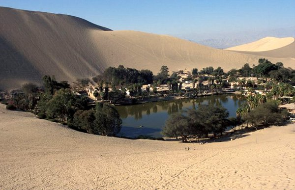
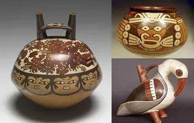

Manisfestaciones Artísticas
Culturales
Reflejan los valores de una cultura a través del tiempo.
las Manisfestaciones Culturales vendrian hacer:
-El Trabajo representa a la region de Ica/Perú
Información..

Danza de Alcatraz
Consiste en un baile de cortejo en el que el hombre, con una vela, trata de encender un pañuelo
o trapo que lleva la mujer colgado en la cintura.
En el caso de la mujer, esta trata de esquivarlo bailando con mucho moviendo de cadera.
Actualmente, la mujer también puede prenderle fuego al pañuelo del hombre, cosa que no se hacía
antiguamente.
Información..

Danza de Pallas
La danza de las pallas la practican solo las mujeres en Navidad y en el Día de Reyes. El vestido
que se utiliza puede ser blanco y muy adornado.
También es posible que usen vestidos en otros colores muy vistosos. En la cabeza siempre llevan
algún tipo de tocado.
Algunas llevan guitarras y otras llevan azucenas (bastones de ritmo). La danza consiste en hacer
pasadas de zapateo, alternando con los cantos de villancicos.
Información..

Ceramica de Nazca
Los Nazcas fueron considerados los “mejores pintores ceramistas de América Prehispánica”, su
cerámica fue polícroma (15 colores), sus decoraciones fueron naturalistas, míticas o religiosas
y geométricas, además utilizaron las técnicas del horror al vacío (llenar de color toda la
vasija) y la precocción (pintar la cerámica y luego cocerla al horno).
Información..

Dedicatoria
Estimado profesor y compañeros, nosotros decidimos hablar sobre la región del Ica. le
agradecemos por haberse tomado su tiempo de visualizar nuestro catálogo espero que este proyecto
sea de su agrado, nos hemos ayudado del hermano de mi compañero para poder realizar este
Trabajo. El trabajo consiste en distintos lenguajes de programación ya sea HTML, CSS, y
JavaScript. para así hacer este catálogo virtual más dinámico.
Este trabajo se realizó con el fin de conocer una hermosa región del Perú, así
también tener conocimiento de sus danzas y culturas.
Muchas Gracias.
Información..

Manisfestaciones Artísticas
Culturales
Reflejan los valores de una cultura a través del tiempo.
las Manisfestaciones Culturales vendrian hacer:
-El Trabajo representa a la region de Ica/Perú
Información..